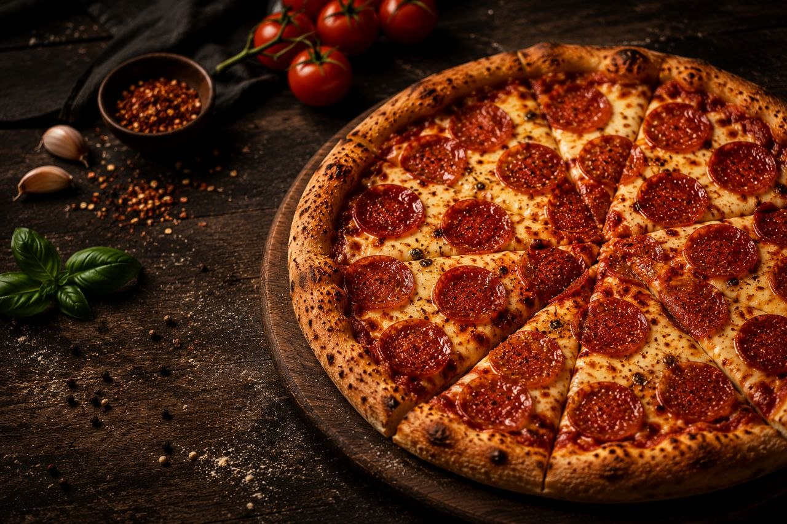

A classic pizza loaded with spicy pepperoni and melted mozzarella.
250 kcal
Easy
15 mins
15 mins
Roll out the pizza dough on a lightly floured surface.
Spread pizza sauce evenly over the dough.
Sprinkle mozzarella cheese generously and arrange the pepperoni slices evenly on top.
Drizzle olive oil, sprinkle dried oregano, chilli flakes(optional),salt and black pepper.
Bake in the preheated oven at 220°C for 12-15 minutes or until the cheese is bubbly and the pepperoni is slightly crispy.
Remove from oven, add fresh basil leaves and serve hot.


Try delicious recipes only on Flavora.